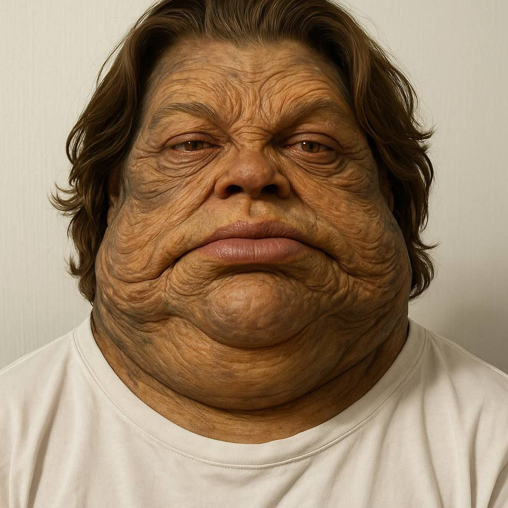
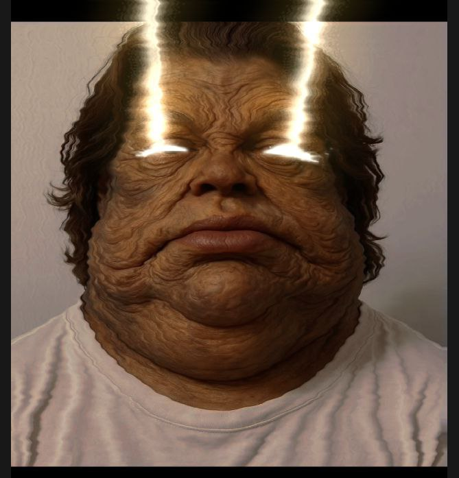
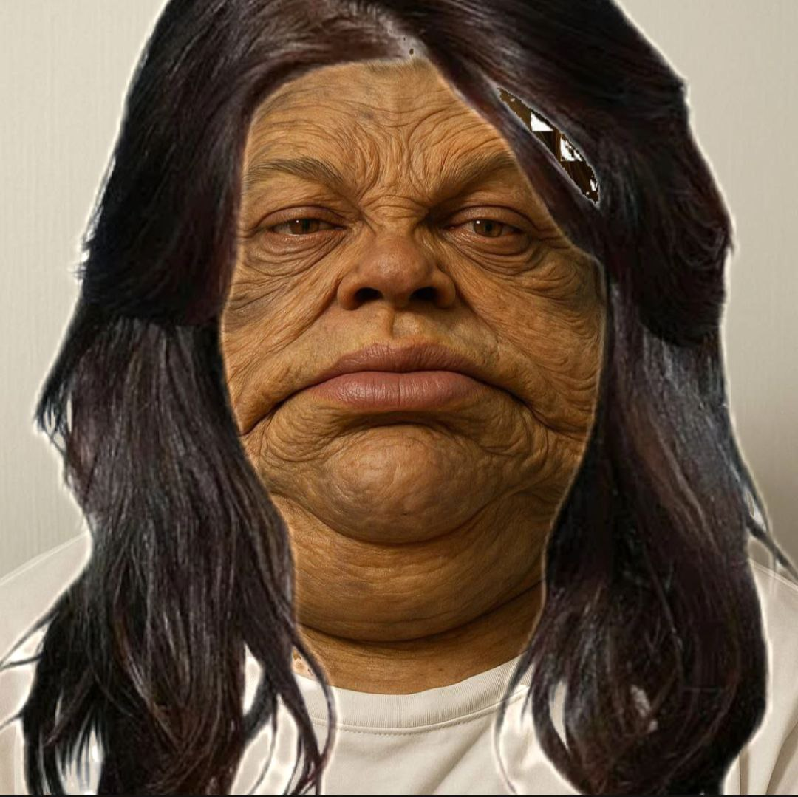

SUISEN

ABOUT ME
Как минимизировать вред, если пьёте колу зеро: Не растягивайте банку на часы: Выпить напиток за 10–15 минут намного безопаснее для эмали, чем делать по глотку каждые 10 минут, поддерживая кислую среду во рту часами. Не чистите зубы сразу после колы: Кислота временно размягчает верхний слой эмали. Если сразу почистить зубы щёткой, вы буквально сотрёте минеральный слой. Подождите минимум 30 минут. Ополосните рот обычной водой: Это быстро восстановит нейтральный pH во рту.1. Дождитесь, пока полностью отойдет анестезия Даже если прошло 2 часа, но губа, щека или язык еще онимевшие — лучше подождать еще немного. Почему: Из-за отсутствия чувствительности можно случайно и очень сильно прикусить щеку или язык до крови. Обычно глубокая «заморозка» на нижней челюсти держится от 2 до 4 часов. 2. Что можно есть в первые 2–3 дня: Мягкая, протертая еда: крем-супы, пюре, йогурты, творожки, мягкие каши (овсянка), смузи, бульоны, суфле или детское питание. Температура: Только теплая или слегка прохладная еда. 3. Что категорически нельзя: Горячее: Горячая еда и напитки вызывают расширение сосудов и могут спровоцировать кровотечение. Твердое, хрустящее и липкое: Орехи, сухарики, чипсы, твердое мясо, семечки. Мелкие крошки могут попасть под швы в лунку и вызвать воспаление. Острое, кислое и соленое: Будет сильно раздражать рану и слизистую. Трубочки / соломинки: Пить только из стакана или есть ложкой (создание вакуума во рту может выдернуть сгусток).
Почему её нельзя держать долго: Время удержания: Стандартное время — 15–30 минут после окончания операции. Риск инфицирования: Если держать тампон дольше (часами), он намокает слюной и кровью, превращаясь в идеальную среду для размножения бактерий прямо над открытой лункой. Риск сорвать сгусток: Когда пропитанная марля начинает подсыхать или прилипать к ране, при позднем извлечении можно случайно выдернуть сформировавшийся кровяной сгусток, что приведет к возобновлению кровотечения или развитию альвеолита («сухой лунки»).
ACHIEVMENTS

Брусничный рассвет ТугАрин-отёка Рваный горизонт Каменный зев Он грозен и страшен Не знающий срока Захватчик дорог Потерянный князь степей (эй-эй) Брусничный рассвет Кровь на ладонях ФоготАвр рыщет Рвёт туман на клочья ТугАрину «куда?» шепчет поле бездонное Но ответа нет Только ветер хрипит всю ночь

Но нашу легендарную дружбу не сломит рок Хоть между нами лёд и тысячи дорог Мы всё равно дойдём до самой сути Однажды снова встретимся в Жужуцу Инфинити

Реквием для мишУтки Каждый вдох — как прощай Мы сражались в жужУцу Друг мой Плечом к плечу Не отступай в моей памяти Останься Фэбулос за один день в фИсче Смех летит Как искры из костра Скажи МишУтка Неужели Всё это больше не имеет веса для тебя
CONTACTS